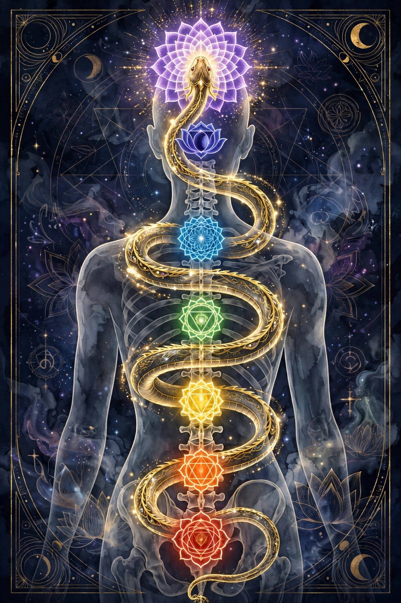

Kundalini
In Hinduism, Kundalini (Sanskrit: कुण्डलिनी, "coiled snake") is a form of divine feminine energy, or Shakti, believed to lie dormant at the base of the spine in the root chakra (muladhara). When awakened through spiritual practice, this energy is said to rise through the central channel of the subtle body, piercing each chakra in turn, until it unites with Shiva at the crown of the head, bringing enlightenment and liberation (moksha).

Concept
Kundalini is visualized as a serpent coiled three and a half times around the base of the spine, or as a goddess. The subtle body is described as containing channels (nadi), principally the central sushumna flanked by the lunar ida and solar pingala. Practices such as mantra recitation, breath control (pranayama), postures, and meditation are used to drive the energy upward. Texts describe accompanying experiences of heat, light, sound, bliss, and involuntary movements.
History
The term appears in late Upanishadic and Tantric literature and is central to the medieval Hatha yoga tradition, whose texts — including the Hatha Yoga Pradipika — describe methods for awakening kundalini. In the modern era the concept was transmitted to the West through Theosophy, the writings of Sir John Woodroffe, and teachers such as Swami Sivananda; Carl Jung discussed kundalini in a series of 1932 seminars, interpreting it psychologically. From the late 1960s, Yogi Bhajan's "Kundalini Yoga" popularized the practice in North America, and later movements such as Sahaja Yoga framed awakening as an experience of "self-realization".
Kundalini awakening and syndrome
Traditions warn that unprepared or forced awakening can be destabilizing. In modern alternative and transpersonal psychology, distressing physical and psychological symptoms attributed to a spontaneous awakening are sometimes called "kundalini syndrome" or "spiritual emergency". These claims are not recognized diagnoses in scientific medicine, and reported symptoms overlap with those of various medical and psychiatric conditions.